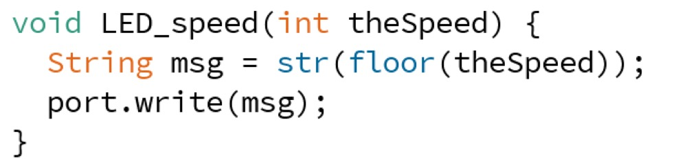

<!DOCTYPE html>
<html lang="en"></html>
<head>
  <meta charset="utf-8">
  <meta content="IE=edge" http-equiv="X-UA-Compatible">
  <meta content="width=device-width, initial-scale=1" name="viewport">
  <title> Rafael Rebolleda — Fab Academy 2020 Documentation</title>
  <!-- Google Fonts-->
  <link rel="stylesheet" href="https://fonts.googleapis.com/css?family=Catamaran&amp;display=swap">
  <link rel="stylesheet" href="../css/main.css">
</head>
<body> 
  <nav>
    <header>
      <ul>
        <li>Rafael Rebolleda</li>
        <li>ESNE (+ LEON)</li>
        <li>Madrid, Spain</li>
      </ul>
      <p class="bio">CX consultant and professor. Single, semi-remote Fab Acadeny student.</p>
    </header>
    <ol>
      <li><a class="red" href="../">About me</a></li>
      <li><a class="blue" href="../FP/">Final Project</a></li>
      <li><a class="blue" href="../DEV/">Project Development</a></li>
    </ol>
    <h1>Assignments</h1>
    <ol> 
      <li><a href="../W1/">Principles & Practices</a></li>
      <li><a href="../W2/">Computer Aided Design</a></li>
      <li><a href="../W3/">Computer Controlled Cutting</a></li>
      <li><a href="../W4/">Electronics Production</a></li>
      <li><a href="../W5/">3D Scan + Printing</a></li>
      <li><a href="../W6/">Electronics Design</a></li>
      <li><a href="../W7/">Computer Controlled Machining</a></li>
      <li><a href="../W8/">Embedded Programming</a></li>
      <li><a href="../W9/">Input Devices      </a></li>
      <li><a href="../W10/">Applications & Implications</a></li>
      <li><a href="../W11/">Output Devices</a></li>
      <li><a href="../W12/">Interface Programming</a></li>
      <li><a href="../W13/">Intellectual Property</a></li>
      <li><a href="../W14/">Networking</a></li>
      <li><a href="../W15/">Molding & Casting</a></li>
      <li><a href="../W16/">Wildcard: Waterjet CCC</a></li>
      <li><a href="../W17/">Mechanical & Machine Design</a></li>
    </ol>
  </nav>
  <main>
    <h1>W12: Interface Programming</h1>
    <h2>Approach</h2>
    <p>For this assignment I thought I'd give <a href="https://processing.org/">Processing</a> a go, since it seems to have a similar structure and coding environment to Arduino.</p>
    <p>Doing a little bit of research, I learned that both can communicate over the serial port, so it seemed worth a try. I also found about <a href="http://www.sojamo.de/libraries/controlP5/">ControlP5</a>, an open source Processing library that deals with GUI elements, so I thought I would also give that a try.</p>
    <h2>The idea</h2>
    <p>Since <a href="../W6">I had built a custom version of the FabKit with an extra LED and button</a> for my <a href="../FP">Final Project</a>, I though I could use it to test bidireccional communication with a simple, proof of concept interface.</p>
    <p>The idea would be to control both LEDs in the PCB via the Processing GUI, and also change the GUI via the button on the PCB. Something like this:</p>
    <p>In the end, as it is often the case, I ended up doing something slightly different.</p>
    <h2>Creating the GUI</h2>
    <p>Processing allows the placing of text, geometric shapes and images by means of coordinates, so I used a bit of everything.</p>
    <p>In it we can see the main elements sketched above:</p>
    <ul>
      <li>A switch to turn on the LED on the PCB</li>
      <li>A slider to control blinking speed for that LED</li>
      <li>A big red bar that turns green when a button is pressed on the PCB</li>
    </ul>
    <p>To create the basic layout I setup the window size, added an image to the project folder and then loaded it in Processing as the main logo.</p>
    <p>Then I created the basic structure with the header and the dividing lines.</p>
    <h2>Having Arduino and Processing talking to each other</h2>
    <p>For both "devices" to talk to each other, they must be on the same serial port. This will change on each computer, but on mine it was "/dev/cu.usbserial-A9M9DV3R". </p>
    <p>Once they're both connected to the same port, each can write to that port and the other can read. All commands exchanged in this case are just one letter:</p>
    <p>Processing to Arduino</p>
    <ul>
      <li>"N" for the LED to turn ON</li>
      <li>"F" for the LED to turn OFF</li>
      <li>A number between 1 and 9 to control the blinking speed</li>
    </ul>
    <p>From Arduino to Processing</p>
    <ul>
      <li>"1" when the button is pressed </li>
      <li>"0" when the button is not pressed</li>
    </ul>
    <h2>Switching the LED ON and OFF</h2>
    <h3>Processing</h3>
    <p>ControlP5 has a number of UI elements which can be configured in terms of size and color. Amongst them is the toggle switch and the slider.</p>
    <p>There's also a linked function that will be trigger whenever there's a change. It is within this function that a message is sent through the serial port:</p>
    <h3>Arduino</h3>
    <p>From the other side, Arduino is reading the serial port and will react depending on the message. The one thing that didn't quite work for me is using a "case" statement. For some reason the values were not being recognised and the branching didn't work, so I went with a bunch of "if" statements instead:</p>
    <p>Further down in the code Arduino checks the variables set up from the serial port reading to turn the LED on and off.</p>
    <p>Here's everyting in action:</p>
    <video src="switch.mp4" autoplay muted controls loop></video>
    <h2>Changing blinking speed</h2>
    <h3>Processing</h3>
    <p>ContolP5 also offers a slider UI element that can be easily configured:</p>
    <p>There's a corresponding function that will send the value through the serial port whenever the slider is moved. I used the "floor" function to make a single number out of an integer.</p>
    <h3>Arduino</h3>
    <p>Just like with the switch, Arduino will check the incoming serial messages to find a recognisable command, in this cases a number from 1 to 9.</p>
    <p>Later it will adjust the delay accoding to the speed:</p>
    <p>Here's everything in action:</p>
    <video src="speed.mp4" autoplay muted controls loop></video>
    <h2>Displaying PCB button state</h2>
    <h3>Arduino</h3>
    <p>This time around the command is initiated in Arduino, as it will be writing on the serial port the state of the button as euther "1" or "0".</p>
    <h3>Processing</h3>
    <p>On the other side, Processing will read this value and change the fill for the button rectangle. It took me quite a long while and lots of trial and error to get this working, and the trick was to:</p>
    <ul> 
      <li>Filter null messages</li>
      <li>Trim the string to remove invisible characters</li>
      <li>Convert to integer for comparison</li>
    </ul>
    <p>Here's everything in action:</p>
    <video src="button.mp4" autoplay muted controls loop></video>
    <h2>Files</h2>
    <ul>
      <li><a href="Processing.zip">Processing Code</a></li>
      <li><a href="Arduino.zip">Arduino Code</a></li>
    </ul>
  </main>
  <footer>
    <hr>
    <p><a rel="license" href="http://creativecommons.org/licenses/by-nc/4.0/"></a><br />This work is licensed under a <a rel="license" href="http://creativecommons.org/licenses/by-nc/4.0/">Creative Commons Attribution-NonCommercial 4.0 International License</a>.</p>
  </footer>
</body>